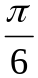
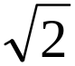
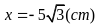
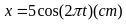
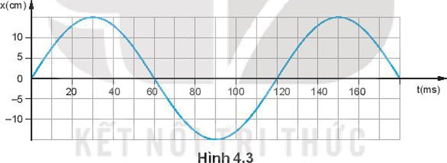
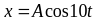
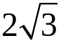
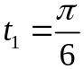
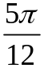

$)$ cm.
cm.
thì tốc độ của vật là $20\pi$ cm/s.
.

(t tính bằng s). Tại t = 2 s, pha của dao động là bao nhiêu rad?
m/s$^2$. Biên độ dao động của viên bi là bao nhiêu cm?
s thì vật vẫn chưa đổi chiều và động năng của vật giảm đi 4 lần so với lúc đầu. Từ lúc ban đầu đến thời điểm $t_2 = $
s vật đi được quãng đường 12 cm. Tốc độ ban đầu của vật là bao nhiêu cm/s?Nhập thông tin để hệ thống ghi nhận kết quả.
Bạn có thêm 5 phút để hoàn tất. Hết 5 phút bài sẽ tự động nộp.
Hành vi này đã được ghi nhận. Hãy quay lại chế độ toàn màn hình để tiếp tục làm bài.